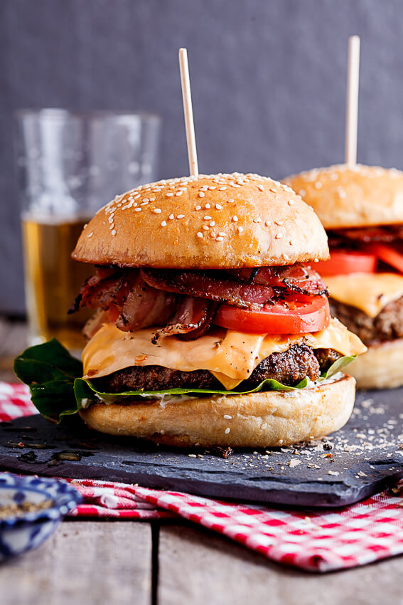

Bacon cheeseburger

Description
A bacon cheeseburger is only as good as the sum of its parts.
Let’s break down the burger trinity, cheese, bacon, and the bun..
Ingredients
Cheese
- 12 slices sharp cheddar cheese
- 15 slices bacon, divided
- 2 pounds ground chuck (80/20 lean to fat ratio
- 1/4 sweet onion, diced
- 1 tablespoon Worcestershire sauce
- 1 1/2 teaspoons kosher salt
- 1 teaspoon freshly cracked pepper
- 6 Brioche hamburger buns
Steps
- Prepare a grill for 2-zone grilling, where one side of the grill is hotter than the other.
- Both the bacon and burgers cook over direct heat, but in case of a flareup, the indirect
or cooler zone gives the meat a safe place to land.
- Prepare the cheese by stacking two slices together with each slice offset by 45 degrees
- Chop 3 slices of uncooked bacon.
- In a large bowl, combine the ground chuck, chopped bacon, onion, and Worcestershire sauce.
- Using your fingertips, gently combine the ingredients with the meat.